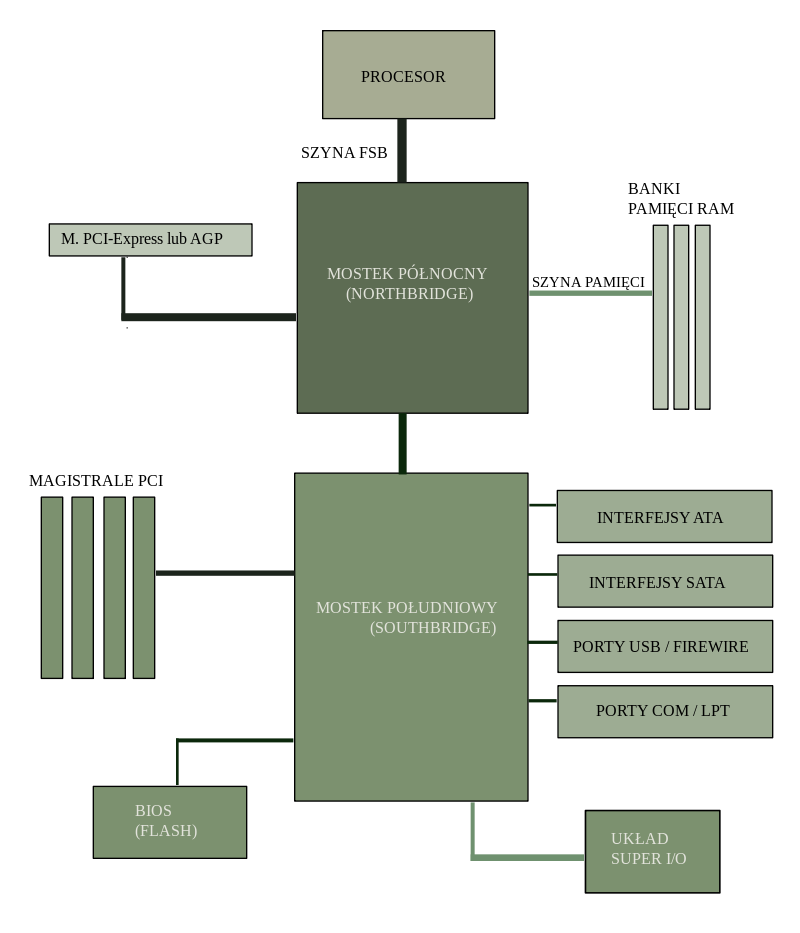

Hejka Kicie! Dziś porozmawiamy o jednym z kluczowych elementów każdego komputera - chipsetach. To układy scalone, które pełnią istotną rolę w koordynacji komunikacji między różnymi podzespołami komputera.
Chipset składa się z dwóch głównych komponentów: mostka północnego, odpowiedzialnego za komunikację z procesorem z pamięcią RAM i GPU, oraz mostka południowego, zarządzającego urządzeniami peryferyjnymi. To właśnie ta struktura decyduje o wydajności komunikacji między podzespołami.

Wyróżniamy trzy główne rodzaje chipsetów: typ Z, typ C
i typ X. Każdy z nich znajduje zastosowanie w różnych rodzajach
komputerów, zależnie od potrzeb.
-typ Z: chipsety stosowane do podkręcania procesora
-typ C – chipsety obsługujące wielordzeniowe procesory, idealne do komputerów gamingowych
oraz profesjonalnych
-typ X – obecnie najbardziej zaawansowana seria chipsetów, dedykowana procesorom AMD
Chipsety są kluczowym ogniwem, gwarantującym efektywną komunikację między podzespołami komputera. Dzięki nim doświadczamy wzrostu wydajności systemu, a także obsługujemy najnowsze technologie.
Mimo licznych zalet, chipsety mają swoje ograniczenia. Niekiedy utrudnione są aktualizacje, a przegrzewanie się podczas intensywnego użytkowania może wpływać na ich wydajność.
Chipsety znajdują swoje miejsce nie tylko w komputerach osobistych, ale również w różnych urządzeniach elektronicznych, od laptopów po telewizory. Pełnią kluczową rolę w poprawie efektywności energetycznej i wydajności systemu.
Chipsety odpowiadają za kontrolę przepływu danych między podzespołami komputera, obsługują interfejsy peryferyjne i wpływają na efektywność energetyczną. Są niezbędne dla sprawnego funkcjonowania komputera.
Rozwój chipsetów obejmuje długą drogę od prostych rozwiązań do zaawansowanych technologii. Wprowadzenie kluczowych standardów, takich jak PCI Express czy DDR4, znacząco wpłynęło na ich ewolucję.
Nowoczesne chipsety Intela, takie jak Intel Optane Memory czy Thunderbolt, oferują zaawansowane technologie, umożliwiając użytkownikom korzystanie z najnowszych funkcji.
Porównując chipsety AMD i Intel, zauważamy unikalne cechy platformy AMD. Wybór pomiędzy nimi zależy od preferencji i potrzeb użytkownika.
Chipsety graficzne, zarówno zintegrowane, jak i dedykowane, wpływają na wydajność w grach i aplikacjach graficznych. Różnice między nimi stanowią kluczową kwestię dla entuzjastów wizualnych doznań.
Ostatnie lata przyniosły wprowadzenie nowych standardów i technologii chipsetów. Od USB 4.0 po PCIe 5.0, chipsety stale ewoluują, dostosowując się do nowych wyzwań.
Wraz z rozwojem technologii mobilnych, chipsety stają się bardziej energooszczędne i wydajne. Zintegrowane z procesorami mobilnymi, umożliwiają osiąganie wysokiej wydajności w smartfonach i tabletach.
Bezpieczeństwo chipsetów staje się priorytetem w obliczu zagrożeń cybernetycznych. Jakie mechanizmy zabezpieczeń oferują chipsety?
Chipsety są nieodłączną częścią konsol do gier, decydując o jakości grafiki i płynności rozgrywki. Ich integracja z technologią wirtualnej rzeczywistości otwiera nowe horyzonty w świecie rozrywki.
W kontekście zwiększonej świadomości ekologicznej, producenci chipsetów skupiają się na redukcji zużycia energii i wpływie na środowisko. Jak podejście ekologiczne wpływa na rozwój chipsetów?
Przegrzewanie chipsetów i ograniczenia w kompatybilności mogą stanowić wyzwanie dla użytkowników. Jakie są główne problemy związane z chipsetami?
Zestawienie kluczowych informacji o chipsetach. Podkreślenie ich roli w dzisiejszych systemach komputerowych. Co warto zapamiętać na zakończenie naszej podróży po świecie chipsetów?